O volante manda
Play, pause, próxima e anterior direto nos botões do carro. Sem procurar nada na tela.
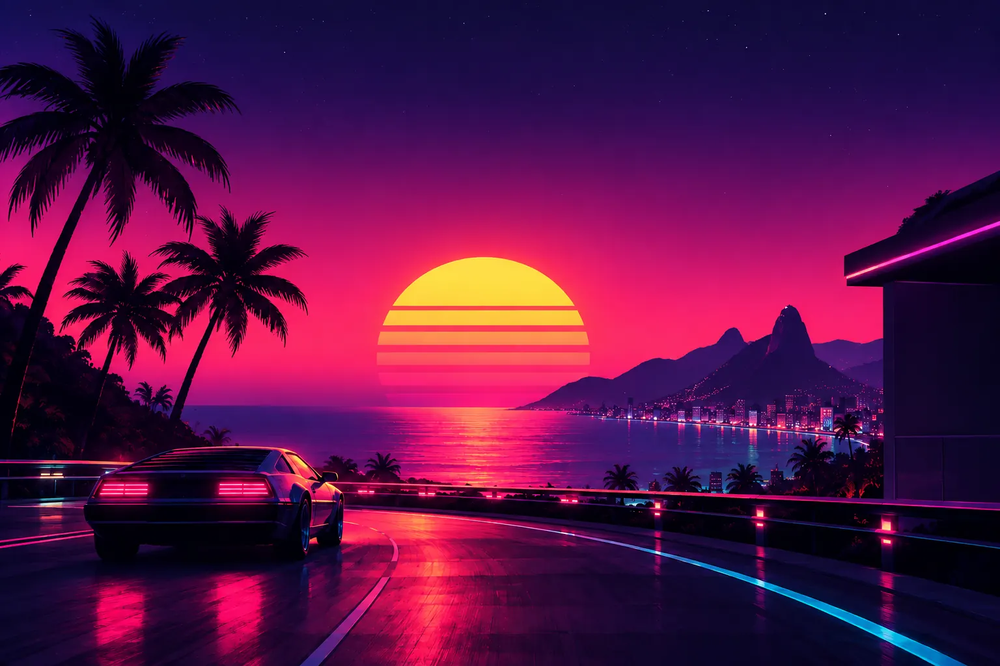
Mais estrada Menos limites
Mãos no volante, olhos na estrada e liberdade para a sua multimídia. Um app driving-first para o Android Auto.
v1.0.0 · Akira
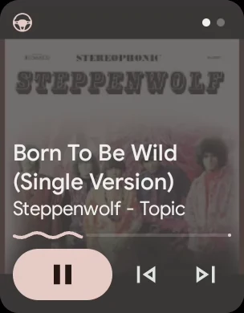
A viagem
Você liga o carro e a música volta de onde parou. Aperta o botão do volante e a faixa pula. Fala Ok Google, tocar synthwave no Fiesta
e está tocando.
O mapa continua na tela, o som continua no ar.
Boa trilha, estrada melhor
Feito para quem dirige
Menos toques, mais estrada. O que você precisa funciona pelo volante, pela voz ou com a tela fechada.
Play, pause, próxima e anterior direto nos botões do carro. Sem procurar nada na tela.
Tocar X no Fiesta
pelo Google Assistente. Você pede, o Fiesta encontra e toca.
Toca em segundo plano, no card de mídia do Android Auto, com capa, título e fila. O mapa na frente.
Desligou o carro no meio da música? Na próxima partida, ela volta sozinha, do mesmo ponto.
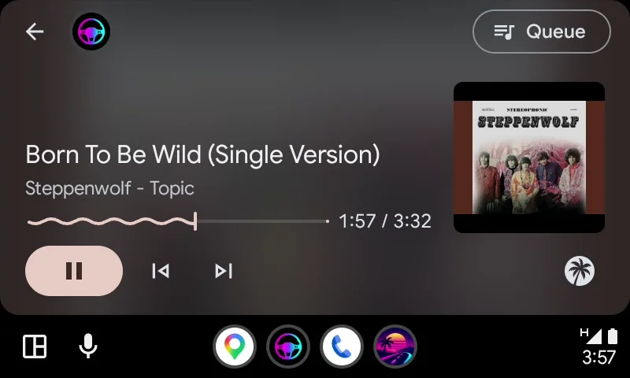
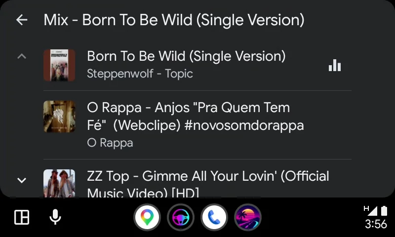
O painel do seu jeito
A barra de ferramentas vai para o topo, a base, a esquerda ou a direita, ou some para a página ocupar tudo e volta com um toque na borda. Os favoritos ficam a um toque, o zoom deixa tudo legível do banco do motorista e tudo isso se ajusta pelo celular, ao vivo.
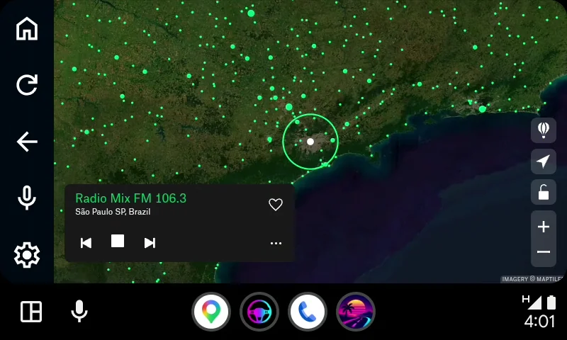
Android AutoFeito para a estrada
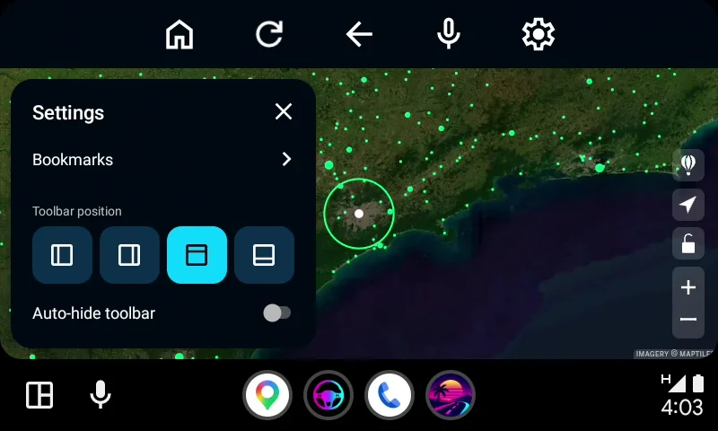
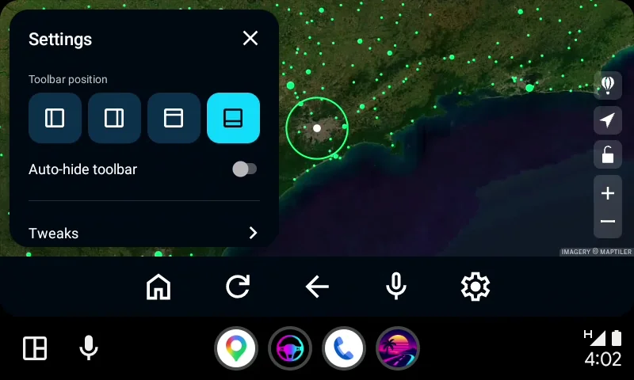
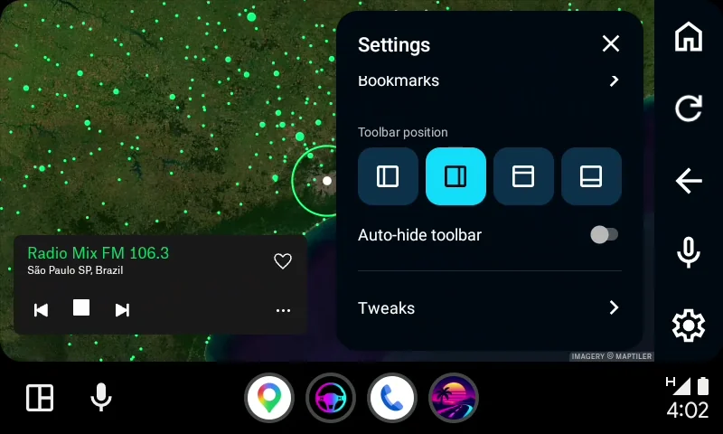
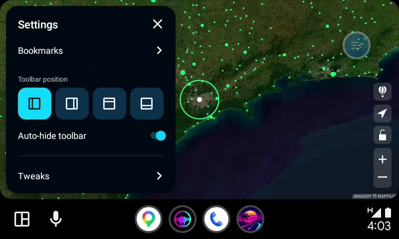
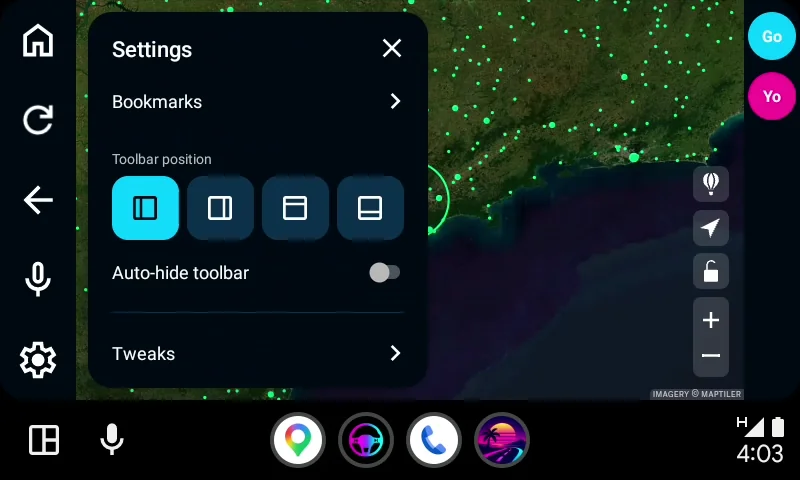
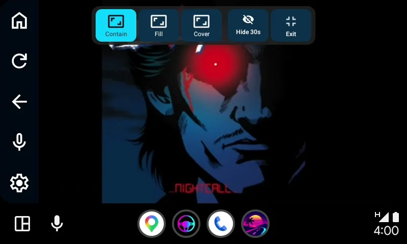
Sem telemetria: o CarStream vinha com Firebase, o Fiesta não envia nada, para ninguém. Domínios conhecidos de anúncio e rastreio são bloqueados de fábrica, por site. O site em que você entra logado continua sabendo quem você é.
Plugins por site ensinam o Fiesta o que o volante faz e o que a tela mostra. Motores de busca plugáveis e modo desktop por site completam o pacote.
Mande uma página do celular direto para a tela do carro e ajuste a barra, o zoom e os favoritos do carro na hora.
App no celular
Um navegador limpo inspirado no Firefox Focus e o controle remoto de tudo o que o carro mostra, no seu bolso.
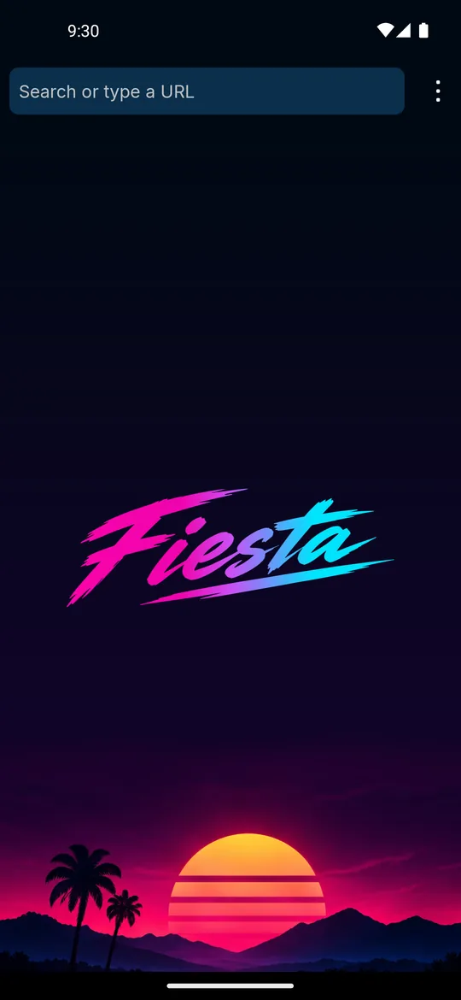
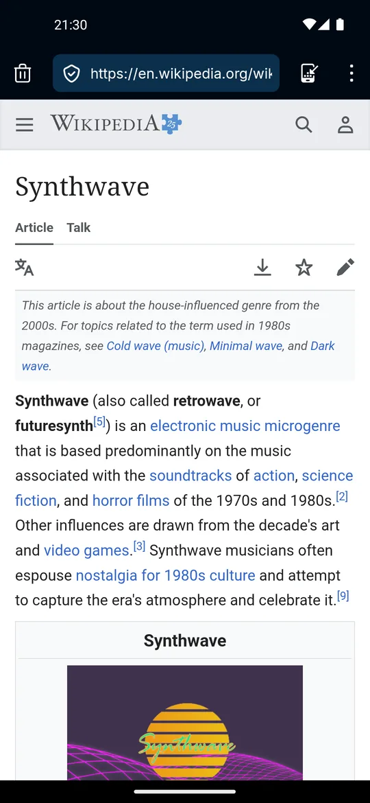
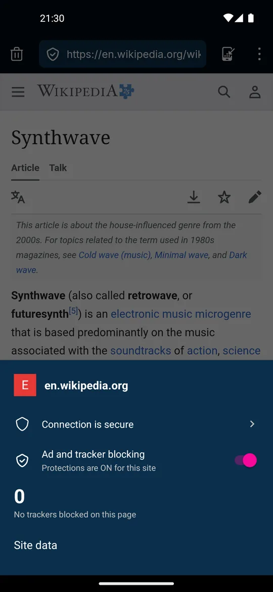
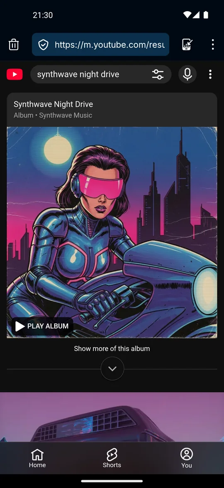
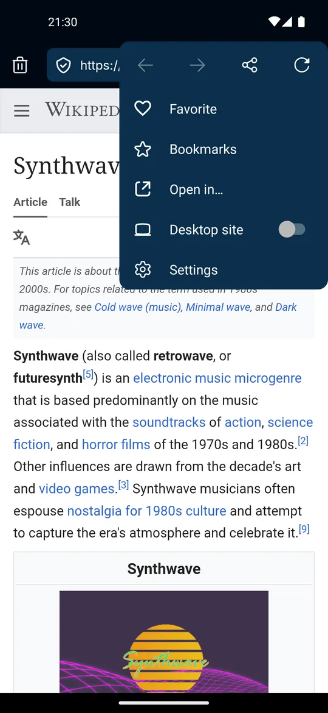
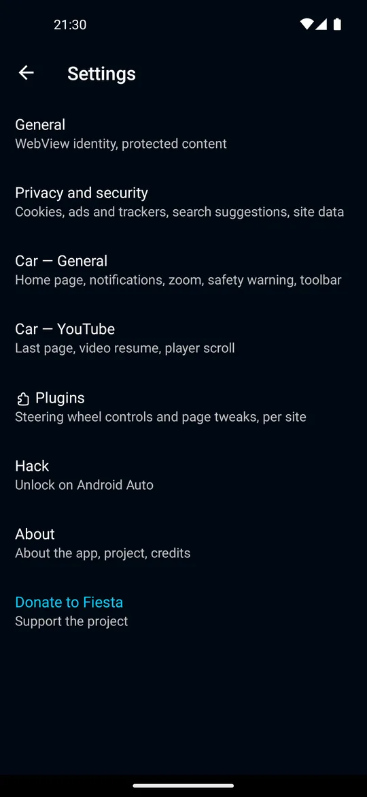
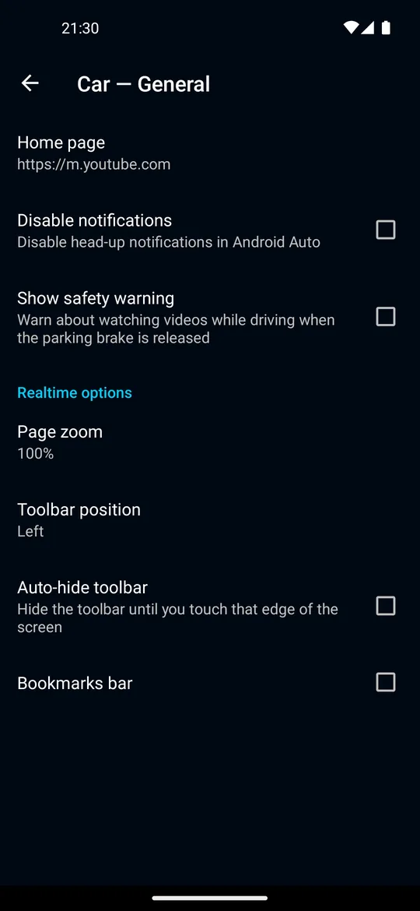
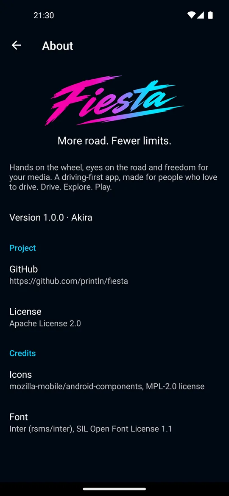
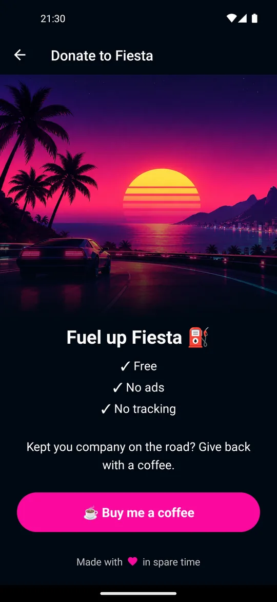
A estética
Estradas à noite, cultura JDM e retrofuturismo, com influências de Akira, Midnight Club, Enduro, synthwave e Vice City. Neon, velocidade e liberdade: uma estética inspirada no passado, feita para a estrada.
Cada versão, um codinome da estrada
… até a Wangan.
Fiesta × CarStream
O Fiesta nasceu do CarStream. Isto é o que a estrada acrescentou.
| Recurso | Fiesta | CarStream |
|---|---|---|
| Comandos pelos botões do volante | ● | — |
Tocar X no Fiestapelo Google Assistente | ● | — |
| Música e vídeo no card de mídia do Android Auto | ● | — |
| Continua tocando com o mapa na tela | ● | — |
| Volta a tocar de onde parou ao ligar o carro | ● | — |
| Barra no topo, na base, nos lados ou oculta | ● | — |
| Bloqueador de anúncios e rastreadores, por site | ● | — |
| Sem telemetria (o CarStream vinha com Firebase) | ● | — |
| Navegador na tela do carro | ● | ● |
Para quem faz sideload
O Fiesta é para quem já instala apps não oficiais no Android Auto: CarStream, AAAD, AA Browser, Fermata Auto. Se essa frase não te diz nada, o Fiesta ainda não é para você.
Quer aprender antes? O projeto AAAD e a comunidade r/AndroidAuto são o lugar para começar. O Fiesta não tem guia nem suporte de instalação.
O que precisa
v1.0.0 · Akira · Grátis e open source
FAQ
Um app de Android Auto que põe o YouTube e qualquer site na tela do carro, comandado pelos botões do volante e pelo Google Assistente. Ele toca em segundo plano com o mapa na tela e volta de onde parou quando você liga o carro.
Sim. Grátis e open source, sem anúncios e sem conta. As doações mantêm o projeto na estrada, mas nada fica preso a elas.
É o CarStream evoluído. O Fiesta continua de onde o CarStream parou, em 2018: mantém o navegador na tela do carro e acrescenta o que o CarStream nunca teve, dos comandos no volante e da voz ao card de mídia do Android Auto. A comparação acima mostra o resto.
YouTube, rádios online e qualquer site que toque áudio ou vídeo no navegador. O YouTube tem plugin próprio, então o volante e o card de mídia o conhecem de cor; os outros sites funcionam pelo plugin genérico.
Sim. Tocar e pausar pelos mesmos botões de mídia que você usa com qualquer app do Android Auto. Próxima e anterior funcionam onde o site oferece, e o YouTube oferece.
Se o seu carro roda o Android Auto a partir do celular, sim: é ali que o Fiesta vive. O Android Automotive, o sistema do Google embutido em alguns carros que funciona sem celular, é outra plataforma e não é suportado.
Android 6.0 ou mais novo. E ele é feito para os celulares de hoje, com as ferramentas mais recentes do Android. Onde o CarStream parou em 2018, o Fiesta segue andando.
Toda versão nova sai na página de releases, cada uma com um codinome da estrada. Instale por cima da que você tem.
O app: não. O Fiesta não tem telemetria. O CarStream vinha com Firebase; o Fiesta não envia nada, para ninguém.
Os sites: em parte. O Fiesta bloqueia domínios conhecidos de anúncio e rastreio, ligado de fábrica e ajustável por site. O site em que você entra logado continua sabendo quem você é.
O Google só libera no Android Auto apps aprovados de mídia, mensagens e navegação, e um navegador para a tela do carro não é um deles. Ficar fora da Play Store é o que deixa o Fiesta fazer o que os apps de carro da loja não fazem.
Não. O Fiesta roda num celular comum. Tem root? Existe um modo de desbloqueio opcional para você também.
Se o CarStream, o AA Browser, o Fermata Auto ou o Screen2Auto já rodam no seu Android Auto, você está a uma instalação do Fiesta: ele entra do mesmo jeito, sem passo extra. Por isso não há guia nem suporte de instalação: o Fiesta é para quem já fez isso antes.
No GitHub Issues. Bug que dá para reproduzir é corrigido mais rápido: conte o que você fez, o que aconteceu, o celular, a versão do Android e o carro.
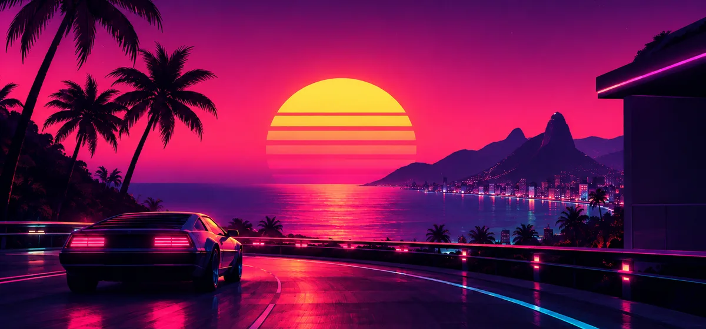
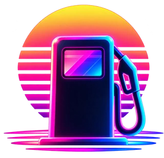
Abasteça o Fiesta
Se o Fiesta melhorou as suas viagens, ajude a mantê-lo na estrada. Ele é feito nas horas vagas, movido a café, e cada doação vira tempo de estrada: